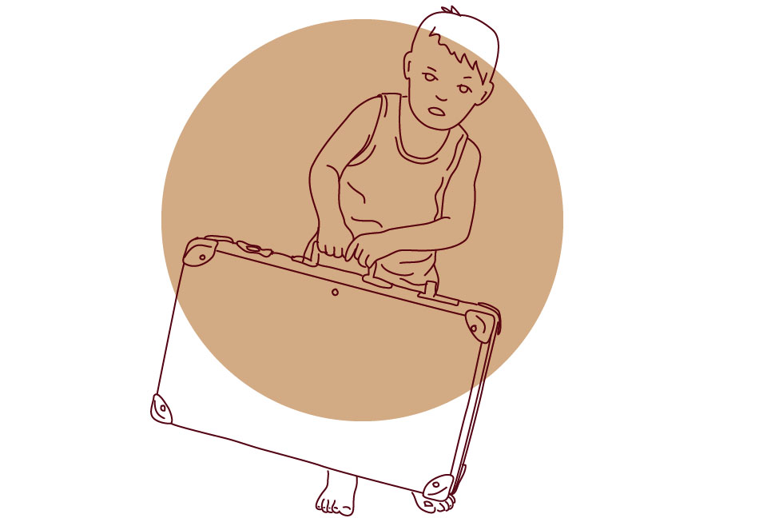
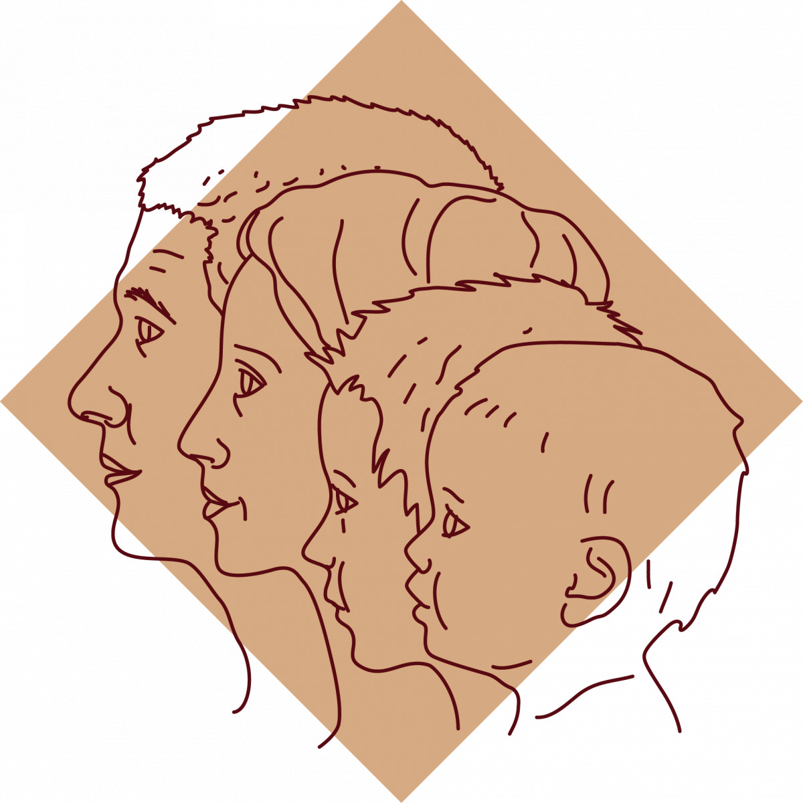

<--
Перевернутая иерархия, парентификация и нарушение границ семьи
Довольно распространенным является мнение о том, что современная семья находится в глубоком кризисе. Одной
из его причин являются различные виды нарушения семейной иерархии, без которой функционирование семьи практически невозможно.
Дети, выросшие в семьях с нарушенной иерархией не в состоянии полностью отделиться от своих родителей, строить полноценные взрослые
отношения и нести отвественность. Предлагаю рассмотреть некоторые из таких нарушений.

Распространенное современное заблуждение на тему родителей-друзей-своих-детей, которые «не навязывают детям свое мнение и обсуждают с ними семейные вопросы» - это очень вредная для ребенка вещь во всех аспектах (и в физическом, и в психическом и прочих). Нужно отметить, что речь не идет о взрослых детях или о старшем подростковом возрасте (хотя иерархия родитель-ребенок сохраняется на протяжении всей жизни), а именно о детях.
Ребенок не в состоянии выбирать, ребенок не в состоянии совместить амбивалентные или неоднозначные понятия и представления, ребенок неспособен в полной мере представлять себе результаты своих поступков. И уж тем более ребенок не несет ответственности за выбор взрослых, за их ошибки и не в состоянии разгребать последствия таких ошибок. Это не его зона отвественности. А поскольку нет ответственности, то и права ребенка в семейной системе соответственно уменьшены. Сколько отвественности - столько и прав.
Ставя ребенка в ситуацию выбора, заставляя обсуждать сложные решения, требуя от него участия во взрослых проблемах родители помещают его на место взрослого, со всеми его правами и обязанностями, чем чудовищно перегружают несформированную детскую психику. Это также вредно, как перетаскивание вручную неподъемных тяжестей, да и результат будет в итоге примерно такой же - отрицательный.

Оборот ролей происходит тогда, когда ребенка вынуждают заботиться о физическом или эмоциональном
состоянии родителей. «Ты не должен расстраивать свою маму: она больна / так много в тебя вложила /
может от этого умереть / неприспособлена к жизни» - нужное подчеркнуть. В своих крайних проявлениях
последствия этого можно увидеть в фильме «Джокер» с Хоакином Фениксом в главной роли. Одной из причин
состояния главного героя была как раз возложенная на него ответственность за психическое благополучие его
больной матери: он не должен ни в коем случае расстраивать ее, он отвечает за то, чтобы она не испытывала
никакие негативные эмоции, более того, он сам не должен их испытывать. В таком же положении оказываются часто
дети алкоголиков или наркоманов, которым приходится заботиться о неадекватных и беспомощных родителях и отвечать
за созданные ими проблемы. В этом случае очень трудно сепарироваться (отделиться) от родителей, стать самостоятельным
и жить полноценной собственной жизнью, поскольку на ребенка возложена чужая ответственность за чужую жизнь, которую он не должен и не способен нести.
Дедушки и бабушки, а также другие родственники не должны дискредитировать родителей в глазах их детей, это и есть нарушение семейных границ. Вообще, любое посягательство на авторитет родителей крайне вредно влияет на детей, поскольку родители для них (в раннем возрасте особенно мать) - это опорная фигура, без психической и физической поддержки которой ребенок попросту неспособен выжить.
Если кто-то выбивает у тебя твою опору, основу твоего существования, то твой мир превращается в неустойчивое и тревожное место, в котором нет безопасности, поэтому в нем невозможно развиваться полноценно, а нужно прятаться и бояться. Такие нападения на опорную фигуру очень затрудняют и процесс сепарации, поскольку отстраивать собственную позицию можно от чего-то устойчивого, в противовес чему-то конкретному, в мире, который стабилен и оказывает поддержку. Дискредитация опорной фигуры (родителя) сводит на нет все эти базовые основания.
Это лишь краткое описание несколько видов искажений семейной иерархической структуры. Такое описание не дает, конечно, полного представления о вопросе, но позволяет хотя бы в первом приближении увидеть закономерности в сложных внутрисемейных процессах.